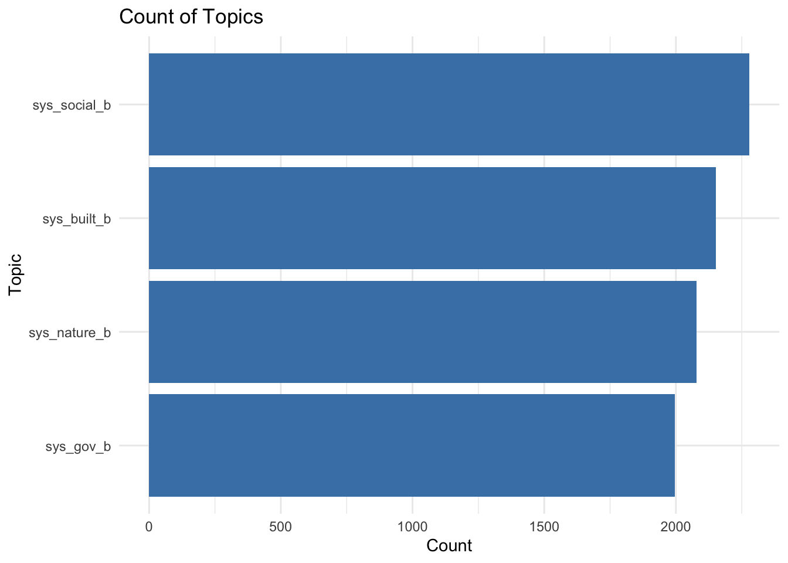

The goal of this project is to compare supervised and unsupervised methods for topic modelling using the existing manual codes as gold standard data. To do supervised topic modelling, I train a random forest classifier to predict if a certain topic is being discussed in a policy based on the text of that policy. To do unsupervised topic modelling, I use LDA to identify clusters of words that are commonly used together across policies, and then I interpret those clusters as topics.
From Homework 1
First, I load in the data directly from the github repo where it is stored and do some initial cleaning so that I can better look at the topics of interest. To start, I plot the number of policies per city and the number of times each topic is considered across all cities.
library(readxl)library(tidyverse)
Warning: package 'tibble' was built under R version 4.5.2
Warning: package 'purrr' was built under R version 4.5.2
── Attaching core tidyverse packages ──────────────────────── tidyverse 2.0.0 ──
✔ dplyr 1.1.4 ✔ readr 2.1.5
✔ forcats 1.0.1 ✔ stringr 1.6.0
✔ ggplot2 4.0.0 ✔ tibble 3.3.1
✔ lubridate 1.9.4 ✔ tidyr 1.3.1
✔ purrr 1.2.1
── Conflicts ────────────────────────────────────────── tidyverse_conflicts() ──
✖ dplyr::filter() masks stats::filter()
✖ dplyr::lag() masks stats::lag()
ℹ Use the conflicted package (<http://conflicted.r-lib.org/>) to force all conflicts to become errors
library(quanteda)
Package version: 4.3.1
Unicode version: 14.0
ICU version: 71.1
Parallel computing: disabled
See https://quanteda.io for tutorials and examples.
library(randomForest)
randomForest 4.7-1.2
Type rfNews() to see new features/changes/bug fixes.
Attaching package: 'randomForest'
The following object is masked from 'package:dplyr':
combine
The following object is masked from 'package:ggplot2':
margin
# download data from Bay Adapt Githuburl <-"https://github.com/BCDC-GIS/Bay-Adapt-Currents/blob/e8e4ec0ad1ee6888070975a138a3d7d075c1a40f/Sea%20Level%20Rise%20in%20General%20Plans/Cities.xlsx?raw=true"# download.file(url, destfile = "data/Cities_Simplified.xlsx")cities_data <-read_excel("data/Cities_Simplified.xlsx")[,1:41]
# cities and how many policies they havecd_cities_plot <-count(cities_data, city) |>arrange(desc(n)) # plotpolicies_per_city <-ggplot(cd_cities_plot, aes(x =reorder(city, n), y = n)) +geom_bar(stat ="identity", fill ="steelblue") +coord_flip() +labs(title ="Policies per City ",x ="City",y ="Number of Policies") +theme_minimal()#save as 6 by 10 in imageggsave("images/policies_per_city.png", bg='white', width =6, height =10)
# count of how many times each topic consideredcd_topic_sums <- cities_clean |>select(sys_built_b:sys_gov_b) |>mutate(across(everything(), as.numeric)) |>summarise(across(everything(), sum, na.rm =TRUE)) |>pivot_longer(everything(), names_to ="topic", values_to ="count") |>arrange(desc(count))
Warning: There was 1 warning in `summarise()`.
ℹ In argument: `across(everything(), sum, na.rm = TRUE)`.
Caused by warning:
! The `...` argument of `across()` is deprecated as of dplyr 1.1.0.
Supply arguments directly to `.fns` through an anonymous function instead.
# Previously
across(a:b, mean, na.rm = TRUE)
# Now
across(a:b, \(x) mean(x, na.rm = TRUE))
# plotggplot(cd_topic_sums, aes(x =reorder(topic, count), y = count)) +geom_bar(stat ="identity", fill ="steelblue") +coord_flip() +labs(title ="Count of Topics",x ="Topic",y ="Count") +theme_minimal()

In this step, I try to predict if a certain policy is discussing a certain topic on the basis of the text in that policy. To do so I use quanteda to create a document-feature matrix from the text of each policy, such that each row is a policy and each column is a word, thus, p>>n. However, I filter to only the top 1000 words which appear in the dataset, which reduces p<n. Then I train an RF classifier to predict if a policy discusses the topic (3 are used here as examples) based on the words used in the policy.
Call:
randomForest(x = dfm_df_train, y = docvars(cities_dfm_train, "sys_built_b"), ntree = 500)
Type of random forest: classification
Number of trees: 500
No. of variables tried at each split: 22
OOB estimate of error rate: 11.57%
Confusion matrix:
0 1 class.error
0 182 60 0.24793388
1 41 590 0.06497623
nature_rf <-randomForest(x = dfm_df_train, y =docvars(cities_dfm_train, "sys_nature_b"), ntree =500); nature_rf
Call:
randomForest(x = dfm_df_train, y = docvars(cities_dfm_train, "sys_nature_b"), ntree = 500)
Type of random forest: classification
Number of trees: 500
No. of variables tried at each split: 22
OOB estimate of error rate: 8.25%
Confusion matrix:
1 0 class.error
1 240 51 0.17525773
0 21 561 0.03608247
social_rf <-randomForest(x = dfm_df_train, y =docvars(cities_dfm_train, "sys_social_b"), ntree =500); social_rf
Call:
randomForest(x = dfm_df_train, y = docvars(cities_dfm_train, "sys_social_b"), ntree = 500)
Type of random forest: classification
Number of trees: 500
No. of variables tried at each split: 22
OOB estimate of error rate: 12.37%
Confusion matrix:
1 0 class.error
1 44 97 0.68794326
0 11 721 0.01502732
gov_rf <-randomForest(x = dfm_df_train, y =docvars(cities_dfm_train, "sys_gov_b"), ntree =500); gov_rf
Call:
randomForest(x = dfm_df_train, y = docvars(cities_dfm_train, "sys_gov_b"), ntree = 500)
Type of random forest: classification
Number of trees: 500
No. of variables tried at each split: 22
OOB estimate of error rate: 18.79%
Confusion matrix:
0 1 class.error
0 262 85 0.2449568
1 79 447 0.1501901
Based on this it seems like a fairly decent start. The first topic seems to look at built infrastructure, with terms like “flood”, “facilities”, and “development”. The third topic maps fairly naturally to natural resources with terms like “shoreline”, “habitat”, “creek”, and “natural”. The thid topic seems to get at governance, with terms like “city”, “mitigation”, “plan”, and “planning”. The fourth topic sort of misses the mark, however, and does not get at social equity and seems to be a more water-focused version of built infrastructure. This is somewhat to be expected with LDA, as only four topics will be pretty coarse by nature and will not cover everything expected. There are two directions to go from here - one is to fit another completely unsupervised LDA model with more categories which we can aggregate and look through to get at a combination of topics that map to social equity.
The other option is to use some of the information we have, namely, that each topic contains certain subtopics. We can use the terms in these subtopics to seed the LDA model, which will hopefully give four topics that match what we are looking for. This is a bit of a rough approach without too much thought, where I just take the main words from each subtopic and use them. A more complicated version would start to concatenate phrases that appear together frequently, for example, instead of “sea”, “level”, and “rise” being seperate tokens, we might concatenate them to “sea level rise”. However, this should suffice for this project.
So based on these four topics, it seems that the fourth topic that was previously hard to decipher is mostly mapping to the ‘social equity’ topic in the seeded model. The ‘built’ and ‘nature’ topics remain fairly similar, and the ‘governance’ topic seems to shift a little bit. There is certainly room for iterative, mostly manual improvement here, in refining the dictionary and evaluating some of these terms in context (all of which can be done in the quanteda package).